Read an array of gas states with associated times and rates from the file named on the line read from the given file.
- Parameters
-
[in,out] file Spec file. [in] gas_data Gas data. times Times (s). rates Rates (s^{-1}). gas_states Gas states.
A gas profile input file must consist of three or more lines, consisting of:
- the first line must begin with
timeand should be followed by space-separated real scalars, giving the times (in s after the start of the simulation) of the gas set points — the times must be in increasing order
space-separated real scalars, giving the times (in s after the start of the simulation) of the gas set points — the times must be in increasing order - the second line must begin with
rateand should be followed by space-separated real scalars, giving the values at the corresponding times - the third and subsequent lines specify gas species, one species per line, with each line beginning with the species name and followed by space-separated scalars giving the gas state of that species at the corresponding times
The units and meanings of the rate and species lines depends on the type of gas profile:
- emissions gas profiles have dimensionless rates that are used to scale the species rates and species giving emission rates with units of mol/(m^2 s) — the emission rate is divided by the current mixing layer height to give a per-volume emission rate
- background gas profiles have rates with units s^{-1} that are dilution rates and species with units of ppb (parts per billion) that are the background mixing ratios
The species names must be those specified by the Input File Format: Gas Material Data. Any species not listed are taken to be zero.
Between the specified times the gas profile is interpolated step-wise and kept constant at its last value. That is, if the times are  , the rates are
, the rates are  , and the gas states are 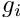 (all with
, and the gas states are 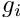 (all with  ), then between times and
), then between times and  the gas state is constant at 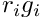. Before time
the gas state is constant at 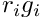. Before time  the gas state is 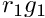, while after time
the gas state is 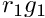, while after time  it is 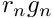.
it is 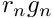.
Example: an emissions gas profile could be:
time 0 600 1800 # time (in s) after simulation start rate 1 0.5 1 # scaling factor H2SO4 0 0 0 # emission rate in mol/(m^2 s) SO2 4e-9 5.6e-9 5e-9 # emission rate in mol/(m^2 s)
Here there are no emissions of 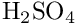, while 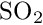 starts out being emitted at 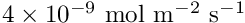 at the start of the simulation, before falling to a rate of 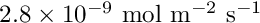 at 10 min (note the scaling of 0.5), and then rising again to 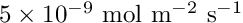 after 30 min. Between 0 min and 10 min the emissions are the same as at 0 min, while between 10 min and 30 min they are the same as at 10 min. After 30 min they are held constant at their final value.
See also:
- Input File Format: Spec File Format — the input file text format
- Input File Format: Gas Material Data — the gas species list and material data